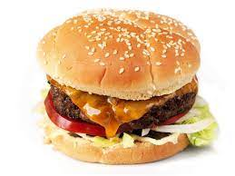

<!DOCTYPE html>
<html lang="en">
</html>
<meta charset="utf-8">
<title>Odin Recipes</title>
</head>
</html>

<body>
    <h1>Hamburger</h1>
    

    <h2>Description</h4>
        The perfect hamburger for a BBQ!

    <h3>Ingredients</h2>
<ul>
    <li>ground beef</li>
    <li>hamburger buns</li>
    <li>onions</li>
    <li>lettuce</li>
    <li>tomatoes</li>
    <li>mayo, ketchup, any sauce of your preference</li>
    <li>cheese</li>
</ul>

    <h4>Steps</h3>
<ol>
    <li>Preheat grill to high</li>
    <li>season ground beef and make shape of a circle for the patty</li>
    <li>place patty on grill and cook until desired rarity</li>
    <li>place cheese on top of patty and let it melt</li>
    <li>place patty and cheese onto hamburger bun</li>
    <li>put sauce on one side of bun</li>
    <li>put onions, lettuce, and tomatoes onto bun and patty and put it all together</li>
</ol>

</body>
</html>